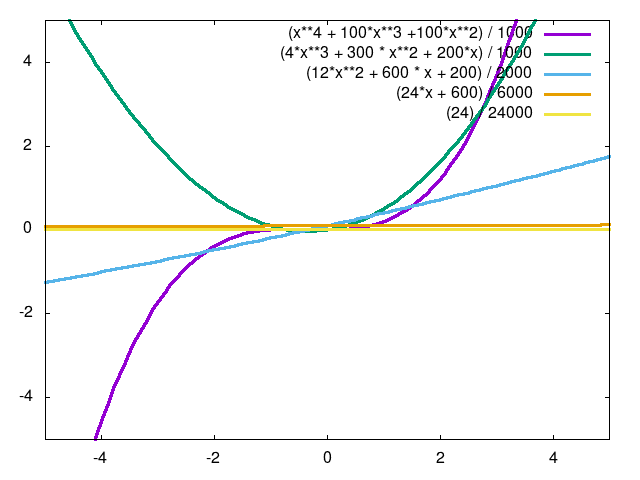

NOTE: Incomplete!
Taylor Series Expansion
I have been formally trained as a physicist. In my mind, there are several mathematical topics that blur the boundary between mathematics and physics. Taylor Series Expansions are one of those topics.
On the one hand, I can see how the expansion could be considered purely mathematical. I mean, here is the definition: \[ f(x) \simeq \sum_{n=0}^{\infty} \frac{f^{(n)}(a)}{n!}(x-a)^n \]
where \( f(x) \) is some function along real or complex space, \( a \) is the point that we are expanding from, and \( f^{(n)}(x) \) denotes the \( n^{\text{th}} \) derivative of \( f(x) \). From this perspective, the expansion just looks like a bunch of derivatives strung together! Where's the physics? Well, let's expand this series for the first few derivatives:
\[ f(x) \simeq f(a) + \frac{df(a)}{dx}(x-a) + \frac{1}{2}\frac{d^2f(a)}{dx^2}(x-a)^2 \]
If we substitute the derivatives for their physical quantities with \( f(x) \rightarrow x(t) \), expanding from 0, and set
\[ \begin{align} \frac{dx(t)}{dt} &= \text{velocity} = v(t) \\ \frac{d^2x(t)}{dt^2} &= \text{acceleration} = a \\ \end{align} \]
The Taylor series expansion turns into one of the most common formulas in classical physics, the kinematic equation!
\[ x(t) \simeq x_0 + v_0t + \frac{1}{2}at^2 \]
Note that here, we assume the acceleration to be constant, but it could technically have higher order terms.
Truth be told, the Taylor Series Expansion can be found in the most unusual places and is used as the foundation of many different algorithms throughout this book. At first, it might not seem obvious why, but we can approximate almost any smooth function with a Taylor Series Expansion, and the more terms we include, the better our approximation becomes! For example, take Figure 1. Any function can be approximated as a sum of all the derivatives for that function. If we evaluate these derivatives at any point, we closely approximate the actual function.

This shows the true power of the Taylor Series Expansion. It allows us to more easily tackle complicated functions by approximating them as functions we can actually use and imagine!
License
Code Examples
The code examples are licensed under the MIT license (found in LICENSE.md).
Text
The text of this chapter was written by James Schloss and is licensed under the Creative Commons Attribution-ShareAlike 4.0 International License.

Images/Graphics
- The image "Taylor Approximation" was created by James Schloss and is licensed under the Creative Commons Attribution-ShareAlike 4.0 International License.
{kind=link}
Pull Requests
After initial licensing (#560), the following pull requests have modified the text or graphics of this chapter:
- none